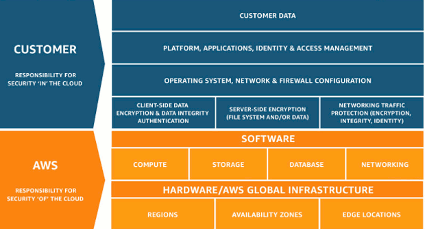
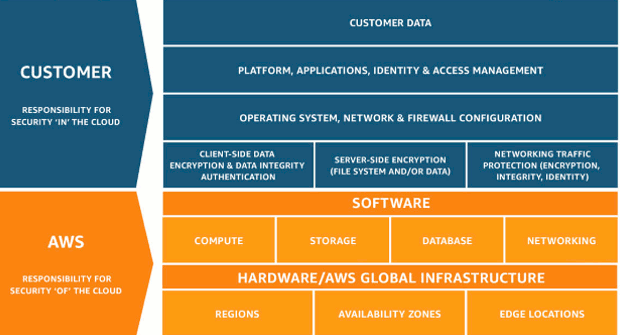

Amazon Web Services Overview
Cloud Computing
On-demand delivery of IT resources over the Internet with pay-as-you-go pricing
Advantages
1. Trade-off CAPEX for OPEX
2. Benefit from Economies of Scale
3. No need to predict capacity requirements
4. Go global in minutes (leverage regions)
5. Agility to apply changes to environment
6. No money spent on running and maintaining a data center
Advantages
1. Trade-off CAPEX for OPEX
2. Benefit from Economies of Scale
3. No need to predict capacity requirements
4. Go global in minutes (leverage regions)
5. Agility to apply changes to environment
6. No money spent on running and maintaining a data center
CAF - Cloud Adoption Framework
Provides guidance and support for organizations that choose to move to the cloud
Perspectives to consider

Perspectives to consider
History of AWS
2003 - Paper by Chris Pinkman and Benjamin Black about SQS
2004 – Launch of SQS
2006 – Launch of AWS
2007 – Launch of EC2 and 108,000 developers signed on
2012 – First Re:Invent Conference
2013 – Introduction of certifications
2020 – Renewable energy to power all AWS data centers worldwide
2004 – Launch of SQS
2006 – Launch of AWS
2007 – Launch of EC2 and 108,000 developers signed on
2012 – First Re:Invent Conference
2013 – Introduction of certifications
2020 – Renewable energy to power all AWS data centers worldwide
Global Infrastructure
Data Center (DC)
is the facility that houses the servers, storage devices, network elements, security devices, and other AWS infrastructure. No AWS DC is "cold". All devices are ODM - Original Design Manufacturer, which is custom for AWS. AWS even uses their own network protocol stack.
Availability Zone (AZ)
made up of one or more DCs, exist within a region, are representations of physically seperated data centers with low latency, private links between them. Designed for fault isolation and no single points of failure. All AZs are connected with redundant links to multiple Tier-1 transit providers.
Regions
geographical areas where Amazon data centers are located and represents the georgraphical location of where the data will reside. Made up of two or more AZs. Communication between regions uses the AWS backbone, a private global network. The public regions are listed in the console, then there are private regions (e.g. US GovCloud) and local regions (e.g. Asia Pacific Osaka that are not listed.
As of June 2018, there are 18 regions worldwide and 55 AZs. There are 4 new regions and 12 AZs that are announced.
Edge Locations
AWS has 107 Points of Presence (PoPs)
96 Edge Locations and 11 Regional Edge Caches in 55 cities across 24 countries
These are used for Route53 and CloudFront
Edge Locations is NOT equivalent to a region or an AZ
is the facility that houses the servers, storage devices, network elements, security devices, and other AWS infrastructure. No AWS DC is "cold". All devices are ODM - Original Design Manufacturer, which is custom for AWS. AWS even uses their own network protocol stack.
Availability Zone (AZ)
made up of one or more DCs, exist within a region, are representations of physically seperated data centers with low latency, private links between them. Designed for fault isolation and no single points of failure. All AZs are connected with redundant links to multiple Tier-1 transit providers.
Regions
geographical areas where Amazon data centers are located and represents the georgraphical location of where the data will reside. Made up of two or more AZs. Communication between regions uses the AWS backbone, a private global network. The public regions are listed in the console, then there are private regions (e.g. US GovCloud) and local regions (e.g. Asia Pacific Osaka that are not listed.
As of June 2018, there are 18 regions worldwide and 55 AZs. There are 4 new regions and 12 AZs that are announced.
Edge Locations
AWS has 107 Points of Presence (PoPs)
96 Edge Locations and 11 Regional Edge Caches in 55 cities across 24 countries
These are used for Route53 and CloudFront
Edge Locations is NOT equivalent to a region or an AZ
Business Challenges in IT
1. Budget
2. Time to Market
3. Scalability
4. Infrastructure Management
5. Security and Compliance
2. Time to Market
3. Scalability
4. Infrastructure Management
5. Security and Compliance
Security
Is a shared responsibility between AWS and the Admin
AWS acts as a trusted advisor and uses features such as Security Groups, Firewalls, public/private keys, and encryption.
You have AWS Global Infrastructure (Regions, AZs, Edge Locations) and Foundation Services (Compute, Storage, Database, Networking) at your disposal
AWS is responsible for:
1. Physical security of DCs
2. Hardware infrastructure: servers and storage (including decommissioning storage disks)
3. Software infrastructure: host OS, service apps, virtualization isolation
4. Network infrastructure: routers, switches, LBs, FWs, network monitoring at external boundaries, intrusion detection
You are responsible for
1. Instance OS including patching and maintenance
2. Application security and access
3. Security groups
4. OS/Instance firewalls including IDS and IPS
5. Network configuration (of VPC)
6. Account management and seperation of delegation
7. User data: client/server side encryption

AWS acts as a trusted advisor and uses features such as Security Groups, Firewalls, public/private keys, and encryption.
You have AWS Global Infrastructure (Regions, AZs, Edge Locations) and Foundation Services (Compute, Storage, Database, Networking) at your disposal
AWS is responsible for:
1. Physical security of DCs
2. Hardware infrastructure: servers and storage (including decommissioning storage disks)
3. Software infrastructure: host OS, service apps, virtualization isolation
4. Network infrastructure: routers, switches, LBs, FWs, network monitoring at external boundaries, intrusion detection
You are responsible for
1. Instance OS including patching and maintenance
2. Application security and access
3. Security groups
4. OS/Instance firewalls including IDS and IPS
5. Network configuration (of VPC)
6. Account management and seperation of delegation
7. User data: client/server side encryption

High Availability (HA) and Fault Tolerance (FT)
"Always design your AWS environment for failure" - Anonymous
HA: always serves purpose despite component failure
FT: still operates at stable capacity and without any performance degredation
HA and FT: DynamoDB and Route53
HA only: EC2 and S3
Example: Your app needs 6 instances for stable performance, how do you achieve HA and FT?
Answer: run 6 instances in each of at least two different AZ's
HA: always serves purpose despite component failure
FT: still operates at stable capacity and without any performance degredation
HA and FT: DynamoDB and Route53
HA only: EC2 and S3
Example: Your app needs 6 instances for stable performance, how do you achieve HA and FT?
Answer: run 6 instances in each of at least two different AZ's
Managed and Un-Managed Services
Managed Services: HA and FT are responsibility of AWS e.g. DynamoDB and Route53
Unmanaged Services: HA and FT are the responsibility of the Admin
Unmanaged Services: HA and FT are the responsibility of the Admin
Disaster Recovery (DR)
DR design is a Cost vs Risk activity to balance Recovery Time Objective (RTO) and Recovery Point Objective (RPO)
RTO - How quickly will the systems recover?
RPO - How much data can you afford to lose?
DR Deployment Strategies
1. Backup and Restore: fully manual process
2. Pilot Light: powered off instances are located in another AZ/Region; the database is synchronously kept up to date
3. Warm Standby: replicated production environment in another AZ/Region but at a lower capacity
4. Multi-Site: fully replicated capacity active/active configuration
RTO - How quickly will the systems recover?
RPO - How much data can you afford to lose?
DR Deployment Strategies
1. Backup and Restore: fully manual process
2. Pilot Light: powered off instances are located in another AZ/Region; the database is synchronously kept up to date
3. Warm Standby: replicated production environment in another AZ/Region but at a lower capacity
4. Multi-Site: fully replicated capacity active/active configuration
Support Plans
All customers receive Basic Support included with their AWS account. All plans, including Basic Support, provide 24x7 access to customer service, AWS documentation, whitepapers, and support forums.
Basic: access to 7 core Trusted Advisor health checks
Developer: business hours access to Cloud Support Associates via email, and access to 7 core Trusted Advisor health checks
Business: 24x7 access to Cloud Support Engineers via email/chat/phone, and access to the full set of Trusted Advisor health checks
Enterprise: 24x7 access to Sr. Cloud Support Engineers via email/chat/phone, and access to the full set of Trusted Advisor health checks
Basic: access to 7 core Trusted Advisor health checks
Developer: business hours access to Cloud Support Associates via email, and access to 7 core Trusted Advisor health checks
Business: 24x7 access to Cloud Support Engineers via email/chat/phone, and access to the full set of Trusted Advisor health checks
Enterprise: 24x7 access to Sr. Cloud Support Engineers via email/chat/phone, and access to the full set of Trusted Advisor health checks
Billing
Cost Explorer: graph, visualize, and analyze your spending
Budgets: create custom budgets with automated alerts for usage, forecast, and thresholds
Reports: detailed data to better analyze where the costs are per AWS service
Cost Allocation Tags: has to be activated, is associated with AWS service and can be tracked throughout the billing pipeline
Simple Monthly Calculator
Budgets: create custom budgets with automated alerts for usage, forecast, and thresholds
Reports: detailed data to better analyze where the costs are per AWS service
Cost Allocation Tags: has to be activated, is associated with AWS service and can be tracked throughout the billing pipeline
Simple Monthly Calculator

Compute
EC2 - Elastic Cloud Compute
Virtual computing environment (instances) that you can launch and manage from a GUI or from CLI code
Supports most OS (Windows, RedHat, SUSE, Ubuntu, Amazon Linux)
Instances are scalable and optimizable
Consider the following before you create: core count, memory size, storage size and type, network performance, and CPU architecture
Pricing Models
1. On-demand: pay as you go compute resources. Low cost, flexible.
2. Spot instances: bidding on instances based on supply/demand, pay the price per instance-hour set at the start of each instance-hour for the entire hour (spot price). Gives 2 minute prior notification before stopping an instance for someone with a higher bid. Good for large scale, dynamic workloads.
3. Reserved instances: full upfront, partial upfront, and no upfront payment options for 1 and 3 year contract durations. Good to predict costs and know available capacity needed.
4. Dedicated Host: you rent the underlying hardware, single-tenancy model, pay hourly, can be upto 75% cheaper than on-demand. You can control licensing. Good for compliance and regulatory requirements.
Per Second Billing: minimum increment is 60 seconds, so even if you run for 10 seconds, you will be charged for 60
Available for On-Demand, Reserved, Spot instances, all regions and AZs, only on Amazon Linux and Ubuntu. Everything else is per-hour.
Supports most OS (Windows, RedHat, SUSE, Ubuntu, Amazon Linux)
Instances are scalable and optimizable
Consider the following before you create: core count, memory size, storage size and type, network performance, and CPU architecture
Pricing Models
1. On-demand: pay as you go compute resources. Low cost, flexible.
2. Spot instances: bidding on instances based on supply/demand, pay the price per instance-hour set at the start of each instance-hour for the entire hour (spot price). Gives 2 minute prior notification before stopping an instance for someone with a higher bid. Good for large scale, dynamic workloads.
3. Reserved instances: full upfront, partial upfront, and no upfront payment options for 1 and 3 year contract durations. Good to predict costs and know available capacity needed.
4. Dedicated Host: you rent the underlying hardware, single-tenancy model, pay hourly, can be upto 75% cheaper than on-demand. You can control licensing. Good for compliance and regulatory requirements.
Per Second Billing: minimum increment is 60 seconds, so even if you run for 10 seconds, you will be charged for 60
Available for On-Demand, Reserved, Spot instances, all regions and AZs, only on Amazon Linux and Ubuntu. Everything else is per-hour.
AMI - Amazon Machine Image
Regional specific object with an AMI-ID that is unique within that region
An image snapshot of your EC2 instance OS and application configuration
Selection is made from your own customized instance or AWS marketplace or AWS community
To replicate, copy snapshot to S3, move regions, create AMI from snapshot (gives different ID)
An image snapshot of your EC2 instance OS and application configuration
Selection is made from your own customized instance or AWS marketplace or AWS community
To replicate, copy snapshot to S3, move regions, create AMI from snapshot (gives different ID)
Instances
Choosing the correct instance type will help with your application performance
Soft Limit: 20 instances per account, after which the console will throw an error if you try to load more
Speak with support to increase the limit for you
General Purpose Instances
Baseline of CPU performance with memory to CPU ratios suitable for most general purpose applications and come with fixed performance (M5, M4) or burstable performance (T2)
Compute Optimized Instances (C4, C5)
Use the latest Intel Skylake
Optimized for compute-instensive workloads and for EBS
Use Cases: High performance web servers, Scientific modeling, Batch processing, Distributed analytics, High-performance computing (HPC), Machine/deep learning, Ad serving, Multiplayer gaming, Video encoding
Storage Optimized Instances (H1, I3, D2)
Optimized for storage-instensive workloads (magnetic disk or NVMe)
H1 Instances: For applications that require low-cost, high disk throughput and high sequential disk I/O access to large data sets
Use Cases: MapReduce, Distributed file systems (HDFS, MapR-FS), Network file systems, Log or data processing apps (Kafka), Big data workloads
I3 Instances: Non-Volatile Memory Express (NVMe) SSD backed instanced
Low latency and high random I/O performance, high sequential read throughput
High IOPS at a low cost
3.3 millions random IOPS at 4-KB block size, 16 Gbps disk throughput
Memory Optimized Instances (R4, X1, X1e)
For memory intensive applications such as databases and memory caching applications
Economical price per GB of RAM
Accelerated Computing Instances (P2, P3, G3, F1)
Gives direct access to FPGA hardware
For custom hardware accelerators using FPGA algorithms
Soft Limit: 20 instances per account, after which the console will throw an error if you try to load more
Speak with support to increase the limit for you
General Purpose Instances
Baseline of CPU performance with memory to CPU ratios suitable for most general purpose applications and come with fixed performance (M5, M4) or burstable performance (T2)
Compute Optimized Instances (C4, C5)
Use the latest Intel Skylake
Optimized for compute-instensive workloads and for EBS
Use Cases: High performance web servers, Scientific modeling, Batch processing, Distributed analytics, High-performance computing (HPC), Machine/deep learning, Ad serving, Multiplayer gaming, Video encoding
Storage Optimized Instances (H1, I3, D2)
Optimized for storage-instensive workloads (magnetic disk or NVMe)
H1 Instances: For applications that require low-cost, high disk throughput and high sequential disk I/O access to large data sets
Use Cases: MapReduce, Distributed file systems (HDFS, MapR-FS), Network file systems, Log or data processing apps (Kafka), Big data workloads
I3 Instances: Non-Volatile Memory Express (NVMe) SSD backed instanced
Low latency and high random I/O performance, high sequential read throughput
High IOPS at a low cost
3.3 millions random IOPS at 4-KB block size, 16 Gbps disk throughput
Memory Optimized Instances (R4, X1, X1e)
For memory intensive applications such as databases and memory caching applications
Economical price per GB of RAM
Accelerated Computing Instances (P2, P3, G3, F1)
Gives direct access to FPGA hardware
For custom hardware accelerators using FPGA algorithms
Tagging
Always tag instances with a key-value pair in order to keep management and administration simple
Auto-Scaling
Launches or terminates instances based on specific conditions
Automatically registers new instances with LBs
Can launch across AZs
Set policy for AutoScalingGroup where instances are created and destroyed based on parameters such as:
Desired count of instances, Minimum and Maximum instance count
One LC corresponds to One ASG.
Correct setup of AutoScalingGroup and LC can protect you from DDoS and high fees ($)
Instance are configured in Launch Configuration (LC) or by custom AMI
Console Status Checks are used to make Auto-Scaling decisions (can be accessed via CloudWatch).
CloudWatch alarms have Auto-Scaling controls built in and can be customized per use case
Launch Configs cannot be altered after creation
Using ASG to manage Software Releases
1. Create a new AMI with your latest application
2. Create new ASG with new LC
3. From LB based on new sessions, switch over ASG's Make sure to change the ASG "Health Check Type" from "EC2" to "ELB"
Limit: 200 ASGs and 200 LCs per region
Automatically registers new instances with LBs
Can launch across AZs
Set policy for AutoScalingGroup where instances are created and destroyed based on parameters such as:
Desired count of instances, Minimum and Maximum instance count
One LC corresponds to One ASG.
Correct setup of AutoScalingGroup and LC can protect you from DDoS and high fees ($)
Instance are configured in Launch Configuration (LC) or by custom AMI
Console Status Checks are used to make Auto-Scaling decisions (can be accessed via CloudWatch).
CloudWatch alarms have Auto-Scaling controls built in and can be customized per use case
Launch Configs cannot be altered after creation
Using ASG to manage Software Releases
1. Create a new AMI with your latest application
2. Create new ASG with new LC
3. From LB based on new sessions, switch over ASG's Make sure to change the ASG "Health Check Type" from "EC2" to "ELB"
Limit: 200 ASGs and 200 LCs per region
Lambda
Event driven or scheduled functions that interact with AWS services
Functions written in different languages (e.g. Python)
Limits on functions: 3GB memory, 5 minute runtime
Charged on count of function invokes
Usually run within a single region, can also be invoked within a VPC to run a private function
Can also be used with IAM rules
Functions written in different languages (e.g. Python)
Limits on functions: 3GB memory, 5 minute runtime
Charged on count of function invokes
Usually run within a single region, can also be invoked within a VPC to run a private function
Can also be used with IAM rules
Meta-Data
#curl http://169.254.169.254/latest/meta-data/
Can find all details about your instance via running the curl or wget command within the instance CLI
2-min spot notification is sent here, so you have to constantly poll the directory
Here you can also find the Public IP of your instance (instead of going through the console)
Can find all details about your instance via running the curl or wget command within the instance CLI
2-min spot notification is sent here, so you have to constantly poll the directory
Here you can also find the Public IP of your instance (instead of going through the console)
Other Details on EC2
Reserved Instances are just a billing scheme. You can purchase at Region Level or at AZ level; regional level is better because if you buy an xlarge instance then you can run 2 large ones.
Also can do a "Scheduled" Reserve i.e. 1 year reserved, compute between 01:00 and 03:00. Halfway towards serverless.
You can re-sell your instances in the AWS marketplace if you don't need them anymore but the contract didn't expire.
And You can upgrade your reserved host model.
Spot instance hibernation: You can basically pause an EBS backed instance, resumed by the Spot service when your defined max price is less than the Spot price.
Crucial to have a hybernation agent and to have an encrypted Root volume.
Instance memory is stored on the root volume when hybernated.
Enhanced Networking: currently supported using SR-IOV (Single Root I/O Virtualization).
SR-IOV is a method of device virtualization that provides higher I/O performance and lower CPU utilization compared to traditional implementations.
For supported Amazon EC2 instances, this feature provides higher packet per second (PPS) performance, lower inter-instance latencies, and very low network jitter.
Also can do a "Scheduled" Reserve i.e. 1 year reserved, compute between 01:00 and 03:00. Halfway towards serverless.
You can re-sell your instances in the AWS marketplace if you don't need them anymore but the contract didn't expire.
And You can upgrade your reserved host model.
Spot instance hibernation: You can basically pause an EBS backed instance, resumed by the Spot service when your defined max price is less than the Spot price.
Crucial to have a hybernation agent and to have an encrypted Root volume.
Instance memory is stored on the root volume when hybernated.
Enhanced Networking: currently supported using SR-IOV (Single Root I/O Virtualization).
SR-IOV is a method of device virtualization that provides higher I/O performance and lower CPU utilization compared to traditional implementations.
For supported Amazon EC2 instances, this feature provides higher packet per second (PPS) performance, lower inter-instance latencies, and very low network jitter.
Network and Content Delivery
VPC - Virtual Private Cloud
Regional level object
A comprehensive set of virtual networking capabilities that allow customers to provision logically isolated virtual network to host AWS resources.
You can create multiple VPCs within the same region and you can include resources in more than one AZ withing a single VPC
You can connect VPCs in different regions to each other without going through the Public Internet
Within a VPC there are multiple subnets that technically map to the AZ'swithin the region.
For example, the North Virginia region has 6 AZ's and a default VPC with 6 subnets. You can create new subnets and assign them to be public or private. The default subnet inside a VPC is publicly accessible.
You configure the following within a VPC:
1. IP Subnets
2. Routing tables
3. Gateways
4. Security settings
A comprehensive set of virtual networking capabilities that allow customers to provision logically isolated virtual network to host AWS resources.
You can create multiple VPCs within the same region and you can include resources in more than one AZ withing a single VPC
You can connect VPCs in different regions to each other without going through the Public Internet
Within a VPC there are multiple subnets that technically map to the AZ'swithin the region.
For example, the North Virginia region has 6 AZ's and a default VPC with 6 subnets. You can create new subnets and assign them to be public or private. The default subnet inside a VPC is publicly accessible.
You configure the following within a VPC:
1. IP Subnets
2. Routing tables
3. Gateways
4. Security settings
VPC Peering
A one-to-one relationship between two VPCs, without any transitive connections. Can be inter and intra region.
Can't have overlapping subnets
Once established, traffic will flow between peer VPCs using private IP addresses
Keep RT and SGs in check.
Always keep track of data transfer charges.

Can't have overlapping subnets
Once established, traffic will flow between peer VPCs using private IP addresses
Keep RT and SGs in check.
Always keep track of data transfer charges.
Routing Tables
A route table contains a set of rules, called routes, that are used to determine where network traffic is directed.
Each subnet in your VPC must be associated with a route table; the table controls the routing for the subnet. A subnet can only be associated with one route table at a time, but you can associate multiple subnets with the same route table.
You cannot delete the main route table, but you can replace the main route table with a custom table that you've created.
Every route table contains a local route for communication within the VPC
Each subnet in your VPC must be associated with a route table; the table controls the routing for the subnet. A subnet can only be associated with one route table at a time, but you can associate multiple subnets with the same route table.
You cannot delete the main route table, but you can replace the main route table with a custom table that you've created.
Every route table contains a local route for communication within the VPC
NAT Gateway vs NAT Instance
NAT Gateway
Managed by AWS, highly available, bursts to 10Gbps, no port forward
For NAT Gateway HA, create in each AZ and point resources to it.
NAT Instance
Managed by you, you design HA, bandwidth based on instance type, can do port forwarding
ELB - Elastic Load Balancer
A regional specific object that accepts incoming traffic from clients and routes requests to its registered targets (EC2 instances) in one or more AZs.
You select the AZs when configuring the ELB and AWS will deploy the service in each subnet selected. You can only select one subnet within an AZ to have the ELB.
The load balancer also monitors the health of its registered targets and ensures that it routes traffic only to healthy targets. When the load balancer detects an unhealthy target, it stops routing traffic to that target, and then resumes routing traffic to that target when it detects that the target is healthy again.
Listener processes check for connection requests based on port and protocol (e.g. HTTP:80, or HTTP:8080)
An ELB is referenced by its DNS name. You should use an A Alias to map your own name to it.
Within an ELB, an Elastic Network Interface (ENI) is created that points to an EC2 instance. You configure the instances across AZ's and the ELB can effectively ensure High Availability of your instances.
A Target Group is an instance resource pool; a logical clustering of instances that serve the same purpose
Cross-zone LB: traffic is distrubuted across registered targets in ALL AZs, enabled by default on APL, disabled on NLB. If disabled, each LB will only sent traffic to its own AZs.
Security Group: The rules for the security groups associated with your load balancer security group must allow traffic in both directions on both the listener and the health check ports. Whenever you add a listener to a load balancer or update the health check port for a target group, you must review your security group rules to ensure that they allow traffic on the new port in both directions.
Connection Draining: wait until sessions are completed before allowing an instance to de-register from a resouce pool
Can be enabled through the console, API, CLI, or CloudFormation
Features that distinguish ELB from Route53
1. HA and scalability is automatically handled by AWS
2. Can be configued along with Security Groups for tighter security
3. Health Checks can be used to maintain status of instances, and traffic is only routed to healthy targets
4. SSL Offloading: the LB will handle HTTP<-->HTTPS translation and encryption instead of the browser or the server>
5. Sticky Sessions: Using Cookies to control the user experience, or using TTL for duration based sessions
6. Proxy Protocol: acts as a transparent proxy, so the user-data (source IP, etc..) can be sent to the instance
7. Works over L4 or L7
Limit: 20 ELBs per region, 5 SGs per ELB
You select the AZs when configuring the ELB and AWS will deploy the service in each subnet selected. You can only select one subnet within an AZ to have the ELB.
The load balancer also monitors the health of its registered targets and ensures that it routes traffic only to healthy targets. When the load balancer detects an unhealthy target, it stops routing traffic to that target, and then resumes routing traffic to that target when it detects that the target is healthy again.
Listener processes check for connection requests based on port and protocol (e.g. HTTP:80, or HTTP:8080)
An ELB is referenced by its DNS name. You should use an A Alias to map your own name to it.
Within an ELB, an Elastic Network Interface (ENI) is created that points to an EC2 instance. You configure the instances across AZ's and the ELB can effectively ensure High Availability of your instances.
A Target Group is an instance resource pool; a logical clustering of instances that serve the same purpose
Cross-zone LB: traffic is distrubuted across registered targets in ALL AZs, enabled by default on APL, disabled on NLB. If disabled, each LB will only sent traffic to its own AZs.
Security Group: The rules for the security groups associated with your load balancer security group must allow traffic in both directions on both the listener and the health check ports. Whenever you add a listener to a load balancer or update the health check port for a target group, you must review your security group rules to ensure that they allow traffic on the new port in both directions.
Connection Draining: wait until sessions are completed before allowing an instance to de-register from a resouce pool
Can be enabled through the console, API, CLI, or CloudFormation
Features that distinguish ELB from Route53
1. HA and scalability is automatically handled by AWS
2. Can be configued along with Security Groups for tighter security
3. Health Checks can be used to maintain status of instances, and traffic is only routed to healthy targets
4. SSL Offloading: the LB will handle HTTP<-->HTTPS translation and encryption instead of the browser or the server>
5. Sticky Sessions: Using Cookies to control the user experience, or using TTL for duration based sessions
6. Proxy Protocol: acts as a transparent proxy, so the user-data (source IP, etc..) can be sent to the instance
7. Works over L4 or L7
Limit: 20 ELBs per region, 5 SGs per ELB
Load Balancer Types
Application Load Balancer
Works at Application Layer, can read the URI in the Request (Layer 7), advanced load balancing of HTTP/S traffic and containers
Benefits:
Supports path-based routing (based on the URL of the request)
Host-based routing (in the HTTP request header, to route traffic to multiple domains using a single ELB)
Can route to multiple applications on a single instance (port based routing)
Health checks are defined at Target Group level, so CloudWatch metrics are more refined, and you can use ASG to scale dynamically at service level
Has verbose and compressed access logs
Network Load Balancer
Makes decisions based on TCP/IP Layer (Layer 4)
Benefits:
Can handle millions of requests per second at extremely low latencies
You can assign a static IP to the ELB
You can register targets that are outside of the VPC
Can also route to multiple applications on a single instance (port based routing)
Same Health Check benefit as AppLB
Classic Load Balancer
Legacy methodoly, also works on TCP/IP layer, can have poor performance, if so, you can ask AWS helpdesk to "Pre-Warm" the LB for you
Works at Application Layer, can read the URI in the Request (Layer 7), advanced load balancing of HTTP/S traffic and containers
Benefits:
Supports path-based routing (based on the URL of the request)
Host-based routing (in the HTTP request header, to route traffic to multiple domains using a single ELB)
Can route to multiple applications on a single instance (port based routing)
Health checks are defined at Target Group level, so CloudWatch metrics are more refined, and you can use ASG to scale dynamically at service level
Has verbose and compressed access logs
Network Load Balancer
Makes decisions based on TCP/IP Layer (Layer 4)
Benefits:
Can handle millions of requests per second at extremely low latencies
You can assign a static IP to the ELB
You can register targets that are outside of the VPC
Can also route to multiple applications on a single instance (port based routing)
Same Health Check benefit as AppLB
Classic Load Balancer
Legacy methodoly, also works on TCP/IP layer, can have poor performance, if so, you can ask AWS helpdesk to "Pre-Warm" the LB for you
Load Balancer Metrics
Sometimes you'll get an HTTP:503 Service Unavailable or HTTP:504 Gateway Timeout errors so you gotta refer to CloudWatch to make sure the ELB is processing requests.
Check for the following CloudWatch metrics:
1. SurgeQueueLength
Surge queue length is defined by the number of requests that are queued by Elastic Load Balancing (ELB). These requests are queued when back-end systems are unable to process incoming requests as fast as the requests are being received
2. SpilloverCount
When the max SurgeQueueLength is exceeded, the sum statistic of the SpilloverCount metric begins to measure the total number of requests that were rejected due to the queue being full
These errors happen if and when you have:
1. Overloaded target instances that can't handles your requests due to CPU/Memory/Network limitations
2. Application dependencies are not being met in time (external data sources outside of your instance or not responding in time)
3. Max connections reached on the web servers and can't process new requests
The solution is to always monitor you CloudWatch logs, refine your web server configs, use ASG to scale out, or scale up your instance type.
Check for the following CloudWatch metrics:
1. SurgeQueueLength
Surge queue length is defined by the number of requests that are queued by Elastic Load Balancing (ELB). These requests are queued when back-end systems are unable to process incoming requests as fast as the requests are being received
2. SpilloverCount
When the max SurgeQueueLength is exceeded, the sum statistic of the SpilloverCount metric begins to measure the total number of requests that were rejected due to the queue being full
These errors happen if and when you have:
1. Overloaded target instances that can't handles your requests due to CPU/Memory/Network limitations
2. Application dependencies are not being met in time (external data sources outside of your instance or not responding in time)
3. Max connections reached on the web servers and can't process new requests
The solution is to always monitor you CloudWatch logs, refine your web server configs, use ASG to scale out, or scale up your instance type.
EIP - Elastic IP Address
A static IP address that is associated with your account
You attach it to an instance in order to get a public IP address on the network interface, just make sure the instance is in a public subnet and has the correct RT rule
Limit: 5 per region. Only IPv4.
You attach it to an instance in order to get a public IP address on the network interface, just make sure the instance is in a public subnet and has the correct RT rule
Limit: 5 per region. Only IPv4.
Route 53
Global Object, Tier 0 service
Highly Available and Fault Tolerant service
Can route traffic between regions based on DNS.
Fast: worldwide anycast, fast propagation of changes
Reliable: redundant service, 100% SLA
Can achieve load balancing of traffic based on:
1. Simple: standard DNS declarations,
2. Weighted Round Robin: assign weights to resource records
3. Geo-Location: resources served from closest region
4. Geoproximity: route traffic based on physical distance to users
5. Latency: resources served from quickets region
6. Health Check and Failover capability
7. Multivalue answers: gives more than one IP to the client to try
A Record Alias: is a CNAME feature by AWS (URL to URL mapping)
ELB, S3, RDS are all assigned DNS endpoints
Best practice to use A Alias to map them to your own naming convention
Highly Available and Fault Tolerant service
Can route traffic between regions based on DNS.
Fast: worldwide anycast, fast propagation of changes
Reliable: redundant service, 100% SLA
Can achieve load balancing of traffic based on:
1. Simple: standard DNS declarations,
2. Weighted Round Robin: assign weights to resource records
3. Geo-Location: resources served from closest region
4. Geoproximity: route traffic based on physical distance to users
5. Latency: resources served from quickets region
6. Health Check and Failover capability
7. Multivalue answers: gives more than one IP to the client to try
A Record Alias: is a CNAME feature by AWS (URL to URL mapping)
ELB, S3, RDS are all assigned DNS endpoints
Best practice to use A Alias to map them to your own naming convention
Security
Security is maintained by Security Groups and NACL (Network Access Control List)
Stateless: have to explicitly define inbound and outbound rules within a policy
Stateful: maintains inbound and outbound session mapping
Stateless: have to explicitly define inbound and outbound rules within a policy
Stateful: maintains inbound and outbound session mapping
Security Group
At VPC level, stateful virtual firewall that control inbound and outbound traffic of associated instances
Implicit deny all,
Filters based on TCP, UDP, and ICMP protocols
Source/Target can be CIDR or other SGs
By default, all new SGs allow all OUTBOUND traffic to all dests
Best practice: create INBOUND rules per tier (web/app/data)
Implicit deny all,
Filters based on TCP, UDP, and ICMP protocols
Source/Target can be CIDR or other SGs
By default, all new SGs allow all OUTBOUND traffic to all dests
Best practice: create INBOUND rules per tier (web/app/data)
NACL - Network Access Control List
At subnet level, stateless, by default is ALLOW ALL so should have explicit deny statements
CloudFront
A CDN service to deliver access to high bandwidth content from sources closer to the user and thereby saves on bandwidth to the origin servers.
Akamai call Edge Servers as ‘Surrogates’
Inherently protects against DDoS (for app stress testing you need special approvals from AWS support team)
Typically, CloudFront serves an object from an edge location until the cache duration that you specified passes—that is, until the object expires. After it expires, the next time the edge location gets a user request for the object, CloudFront forwards the request to the origin server to verify that the cache contains the latest version of the object.
The response from the origin depends on whether the object has changed:
If the CloudFront cache already has the latest version, the origin returns a 304 status code (Not Modified).
If the CloudFront cache does not have the latest version, the origin returns a 200 status code (OK) and the latest version of the object.
If an object in an edge location isn't frequently requested, CloudFront might evict the object—remove the object before its expiration date—to make room for objects that have been requested more recently.
By default, each object automatically expires after 24 hours. For web distributions, you can change the default behavior in two ways:
-TTL of all objects at the same time
-TTL of objects individually
Akamai call Edge Servers as ‘Surrogates’
Inherently protects against DDoS (for app stress testing you need special approvals from AWS support team)
Typically, CloudFront serves an object from an edge location until the cache duration that you specified passes—that is, until the object expires. After it expires, the next time the edge location gets a user request for the object, CloudFront forwards the request to the origin server to verify that the cache contains the latest version of the object.
The response from the origin depends on whether the object has changed:
If the CloudFront cache already has the latest version, the origin returns a 304 status code (Not Modified).
If the CloudFront cache does not have the latest version, the origin returns a 200 status code (OK) and the latest version of the object.
If an object in an edge location isn't frequently requested, CloudFront might evict the object—remove the object before its expiration date—to make room for objects that have been requested more recently.
By default, each object automatically expires after 24 hours. For web distributions, you can change the default behavior in two ways:
-TTL of all objects at the same time
-TTL of objects individually
Other Details on Networking and Content Delivery
DDoS Mitigation using Edge Locations, WAF, and ELB
Each VPC has one and only one Internet Gateway
Subnets are associated with one Route Table only
VPC now supports dual-stack of IPv4 and IPv6
Stateful Rules: if you initiate an ICMP ping from your home computer to your instance, and your INBOUND SG allows ICMP, response traffic is tracked as an established connection and is allowed even if you have an explicit deny on OUTBOUND ICMP.
If you don't want users to access content on S3 using S3 URLs, and instead only use CloudFront, then create an Origin Access Identity (OIA) and grant access from S3 to the OIA only. Protects you when you want to use signed URLs to check who can access the content (e.g. paid content)
Each VPC has one and only one Internet Gateway
Subnets are associated with one Route Table only
VPC now supports dual-stack of IPv4 and IPv6
Stateful Rules: if you initiate an ICMP ping from your home computer to your instance, and your INBOUND SG allows ICMP, response traffic is tracked as an established connection and is allowed even if you have an explicit deny on OUTBOUND ICMP.
If you don't want users to access content on S3 using S3 URLs, and instead only use CloudFront, then create an Origin Access Identity (OIA) and grant access from S3 to the OIA only. Protects you when you want to use signed URLs to check who can access the content (e.g. paid content)

Storage
Simple Storage Service (S3)